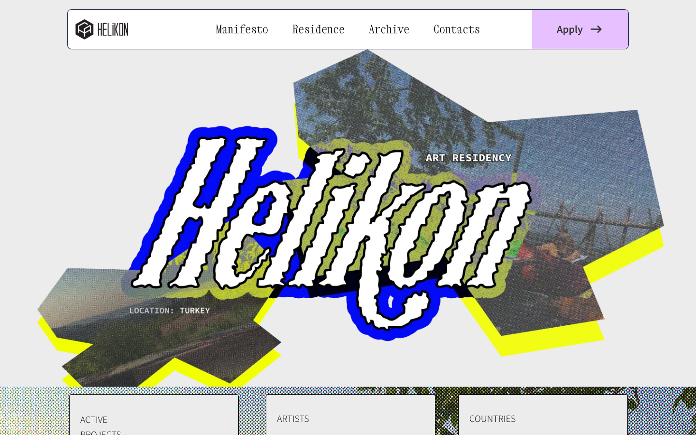
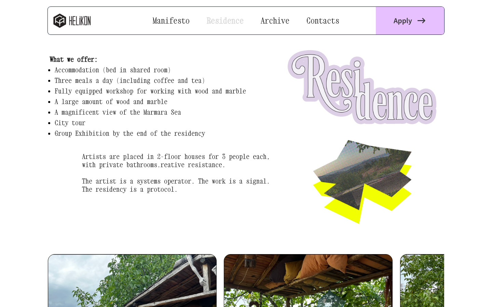
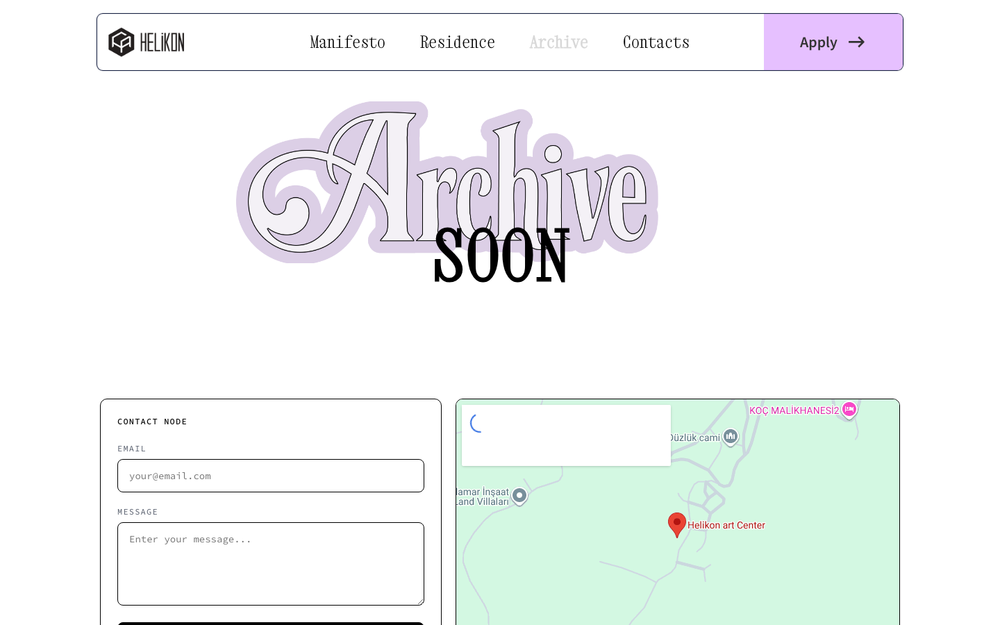

Helikon Art Center
A website case for an artist-run residency platform, shaped to hold manifesto, residence details, archive, and application flows inside one calm, editorial structure.
Build a digital platform for an artist-run residency that holds manifesto, logistics, archive, and applications — without losing atmosphere.
Design the information architecture and visual language for an editorial website carrying multiple content zones inside one coherent structure.
A calm, layered editorial system where navigation rhythm is part of the design language — each section scales to the content it holds.

A residency platform that needed clarity without losing atmosphere.
Helikon Art Center is an artist-run space, so the digital experience had to feel open and self-possessed rather than overly institutional. The structure needed to carry several different tones at once: manifesto, residency logistics, archive material, and contact points for future participants.
The goal of the case was to keep that breadth readable. Instead of treating the site as a sequence of isolated pages, the layout was shaped as one continuous system where navigation, typography, and pacing make the platform feel coherent from the first scroll.


The site had to feel like a cultural space in motion: clear enough for applications and archive browsing, but still warm, porous, and distinctly independent.
One system for manifesto, residency details, and the growing archive.
The navigation rhythm was treated as part of the design language. Each page keeps enough continuity to feel related, but the content blocks change scale depending on whether the user is reading context, moving through residency information, or scanning documentation of past activity.
That balance keeps the platform legible. The manifesto can remain spacious and declarative, while the residency and archive pages can become denser without making the site feel fragmented.
A calmer web presence for an active art space.
The resulting direction frames Helikon as both a living residency and an archive of cultural production. It gives the platform a steadier hierarchy, makes page-to-page movement feel more intentional, and lets the content speak without flattening the character of the space.
Visually, the case leans on restraint: wide margins, strong type, and a measured editorial pace. That allows the content itself, rather than decorative noise, to carry the sense of place.